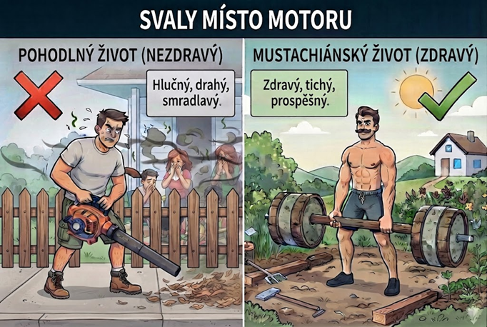

Svaly místo motoru
Tento článek je čtvrtý díl v sérii Moudrost Mr. Money Mustache, ve které stručně shrnuju myšlenky Peta Adeney. Pokud by Vás zaujaly, neváhejte navštívit jeho blog.
Možná už jste zaznamenali opakující se motiv. Způsob, jakým žije Mr. Money Mustache, nejen šetří peněženku, ale především utužuje zdraví a dlouhodobou spokojenost. V případě dnešního tématu to platí dvojnásob. Pokud chceme i v pokročilém věku zůstat pohybliví, fyzická námaha je nezbytná. Svaly, které nezatěžujeme, zakrní.

Odklízení sněhu, zametání listí, sekání trávy, řezání dřeva, vysávání a vytírání, ... to vše je skvělá příležitost protáhnout si tělo a posílit různé svalové skupiny. Odolejte pokušení nechat za sebe pracovat drahé přístroje, které v lepším případě pouze spotřebovávají elektrickou energii, v tom horším všechny okolo obtěžují hlukem a zápachem ze spalovacího motoru.
Místo drahého členství v posilovně a složitých strojů zkuste cvičit s vlastní vahou a zvedat těžké předměty.
O ježdění autem vyšel samostatný článek. Pokud se potřebujete přemístit jen pár zastávek, zkuste ten kousek dojít pěšky. Místo výtahu používejte vždy schody.
Existuje spousta možností jak trávit volný čas aktivně, v přírodě, s minimem nákladů a maximem fyzického úsilí.
Místo polehávání na sedačce u televize hledejte pro své večery aktivnější zábavu. Sudium, úklid, procházka, cvičení, večer s partnerem/kou, meditace, journaling, práce na zahrádce nebo na hobby projektu. Získáte nové dovednosti nebo utužíte své zdraví či partnerský vztah a navíc budete mít další den víc energie.
Zdroje: